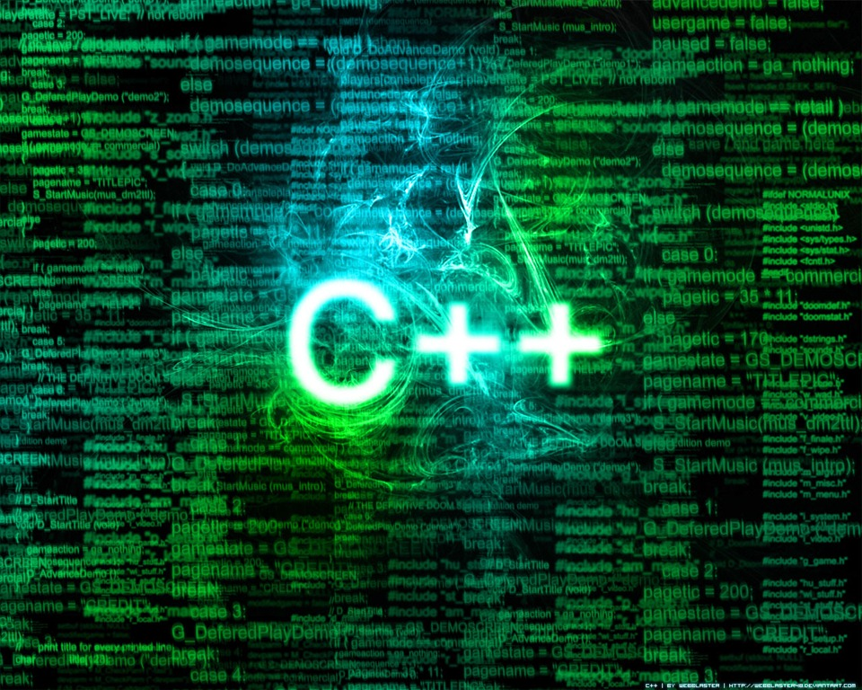
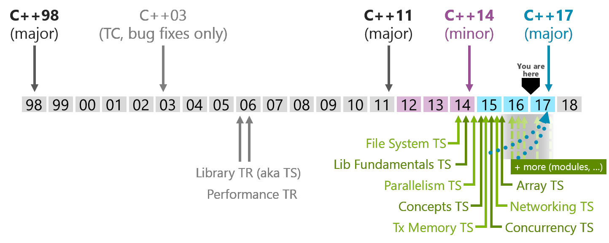

C++ in 2017

Students in SHSM
Table of Content
- History
- Developing in C++
- Standarts
- C++98
- C++03
- C++TR1
- C++11
- C++14
- C++17 (1z, not ready)
- C++20
- Compilers & IDEs
Table of Content
- Classes, Inheritance, Abstract Classes
- Templates
- extern
- Rvalues
- constexpr
- Initializer lists
- Uniform initialization
- auto/decltype
- Range-based for loop
- Lambda expressions
- Null pointer
- enumerations
- typedef/using
- Literals
- Digit separators
- Attributes
- Standard Template Library(STL)
History

Bjarne Stroustrup (30 December 1950) is a Danish computer scientist, most notable for the creation and development of the widely used C++ programming language.
Stroustrup began developing C++ in 1978 (then called "C with Classes").
Learn more: Bjarne Stroustrup - Wikipedia
Developing in C++

imperative, object-oriented and generic programming features, while also providing facilities for low-level memory manipulation
imperative, object-oriented and generic programming features, while also providing facilities for low-level memory manipulation
Classes, Inheritance, Abstract classes
```cpp
struct Abstract
{
virtual void f () = 0; // pure virtual
virtual void g () // non-pure virtual
{
}
~Abstract ()
{
g (); // okay, calls Abstract::g ()
f (); // undefined behavior!
Abstract::f (); // non-virtual call
}
};
```
```cpp
//definition of the pure virtual function
void Abstract::f ()
{
std::cout << "A::f()\n";
}
struct Concrete : Abstract
{
void f () override
{
Abstract::f (); // OK: calls pure virtual function
}
void g() override
{
}
```
```cpp
~Concrete ()
{
g (); // okay, calls Concrete::g()
f (); // okay, calls Concrete::f()
}
};
```
Classes, Inheritance, Abstract classes
final/override
final/override
final/override
```cpp
struct Base
{
virtual void foo();
};
struct A : Base
{
void foo() final; // A::foo is overridden and it is the final override
void bar() final; // Error: non-virtual function cannot be overridden or be final
};
struct B final : A // struct B is final
{
void foo() override; // Error: foo cannot be overridden as it's final in A
};
```
```cpp
struct C : B // Error: B is final
{
};
```
Classes, Inheritance, Abstract Classes
Live demo
Templates
Function template
A function template defines a family of functions.
```cpp
template <typename RAI> void sort (RAI begin, RAI end)
{
...sorting algorithm...
}
```
Class template
A class template defines a family of functions.
```cpp
template <typename T> struct Comparer
{
bool operator() (T a, T b)
{
return a < b;
}
}
```
Templates
Variadic templates
A template with unlown number of template variables
```cpp
template <typename x, typename... args>
void printf(const char *format, x what, args... params) {
...do something...
}
```
Templates
Live demo
Extern
It tells the compiler that the variable is defined somewhere else, so it doesn't complain about it being undefined or beeing redefined
```cpp
//include.hpp
extern int a;
//file.cpp
#include "include.hpp"
int a = 4;
//main.cpp
#include <iostream>
#include "include.hpp"
int main() {
std::cout << a << std::endl;
}
//compile command: g++ file.cpp main.cpp -o exe.exe -std=c++17
```
Extern
Live demo
Constant expressions(constexpr)
The constexpr specifier declares that it is possible to evaluate the value of the function or variable at compile time
```cpp
constexpr long long fib(int a) {
if (a <= 1) {
return 1;
}
return fib(a - 1) + fib(a - 2);
}
int main() {
constexpr long long a = fib(91);
std::cout << a << std::endl;
}
```
Constant expressions
Live demo
Initalizer lists
This type is used to access the values in a C++ initialization list, which is a list of elements of type const T
```cpp
class myClass {
private:
int a, b, c;
public:
myClass();
myClass(int, int, int);
myClass(std::initializer_list<int>);
}
myClass a;
myClass b(1, 2, 3);
myClass c{1, 2, 3};
```
Initalizer lists
Live demo
Uniform initialization
Uniform Initialization expands on the Initializer List syntax, to provide a syntax that allows for fully uniform type initialization that works on any object
```cpp
#include <string>
class Person {
private:
int age;
std::string name;
double height;
public:
Person(int age, std::string name, double height)
: age{age}, name{name}, height{height} {}
};
```
Uniform initialization
Live demo
Auto/Decltype
auto
For variables, specifies that the type of the variable that is being declared will be automatically deduced from its initializer.
```cpp
int a = 5;
auto a = 5;
```
```cpp
long a = 5;
auto a = 5l;
```
```cpp
map <string, map <string, map < string, int >>> a;
map <string, map <string, map < string, int >>>::iterator it = a.begin ();
auto it = a.begin ();
```
decltype
Inspects the declared type of an entity or the type and value category of an expression.
```cpp
map <string, map <string, map < string, int > > > a;
decltype (a.begin ()) it;
for (it = a.begin () ; it != a.end () ; it ++)
{
...
}
```
Auto/Decltype
Live demo
Range-based for loop
Executes a for loop over a range.
Used as a more readable equivalent to the traditional for loop operating over a range of values, such as all elements in a container.
Used as a more readable equivalent to the traditional for loop operating over a range of values, such as all elements in a container.
```cpp
vector <int> v = {0, 1, 2, 3, 4, 5};
for (const int& i : v) // access by const reference
cout << i << ' ';
cout << '\n';
for (auto& i : v) // typeof (i) == int&
cout << i << ' ';
cout << '\n';
map <string, int> m;
for (auto& x : m)
cout << x.first << " " << x.second << "\n";
```
Decomposition declaration
```cpp
map <string, int> m;
for (auto&& [first, second] : m)
cout << first << " " << second << "\n";
```
Range-based for loop
Live demo
Lambda functions
Creates unnamed function object capable of capturing variables in scope.
```cpp
['capture-list']('params') mutable(optional) constexpr(optional) exception attribute -> ret {
body
}
```
Example:
```cpp
[](auto a) -> auto {
return a * a;
}
```
Lambda functions
```cpp
['capture-list']('params') mutable(optional) constexpr(optional) exception attribute -> ret {
body
}
```
Capture list
It is a comma-separated list of zero or more captures- [a, &b] captures a by value and b by reference
- [&] captures all variables in current scope by reference
- [=] captures all variables in current scope by value
- [] captures nothing
params
It is the list of parameters(like in normal functions)Lambda functions
```cpp
['capture-list']('params') mutable(optional) constexpr(optional) exception attribute -> ret {
body
}
```
Mutable
Allows body to modify the parameters captured by copyconstexpr
Makes this function is a constant expressionexception
Provides the exception specification or the noexcept clause for operator() of the typeLambda functions
```cpp
['capture-list']('params') mutable(optional) constexpr(optional) exception attribute -> ret {
body
}
```
attribute
Provides the attribute specification for operator()ret
Defines the return type of the functionBody
The sequense of actions (like in normal functions)Lambda functions
Live demo
Null pointer(nullptr)
The keyword nullptr denotes the pointer literal, which points into nothing. In c++ NULL keyword expands to 0, which can cause some problems
```cpp
#include <iostream>
#include <typeinfo>
int main ()
{
std::cout << typeid (nullptr).name() << std::endl;
std::cout << typeid (NULL).name() << std::endl;
std::cout << typeid (102l).name() << std::endl;
}
```
Null pointer
Live demo
Enum
enum
An enumeration is a distinct type whose value is restricted to a range of values (see below for details), which may include several explicitly named constants ("enumerators"). The values of the constants are values of an integral type known as the underlying type of the enumeration.
```cpp
#include <iostream>
enum smallenum : int16_t
{
a,
b,
c
};
```
```cpp
enum color
{
red,
yellow,
green = 20,
blue
};
```
```cpp
enum class altitude : char
{
high='h',
low='l'
};
```
```cpp
enum
{
d,
e,
f = e + 2
};
```
Enum
enum
```cpp
std::ostream& operator<<(std::ostream& os, color c)
{
switch(c)
{
case red : os << "red"; break;
case yellow: os << "yellow"; break;
case green : os << "green"; break;
case blue : os << "blue"; break;
default : os.setstate(std::ios_base::failbit);
}
return os;
}
```
```cpp
std::ostream& operator<<(std::ostream& os, altitude al)
{
return os << static_cast<char>(al);
}
```
```cpp
int main ()
{
color col = red;
altitude a;
a = altitude::low;
std::cout << "col = " << col << '\n'
<< "a = " << a << '\n'
<< "f = " << f << '\n';
}
```
Enum
Live demo
Digit separators
Digit separator is ' used between digits in number. It is just to make code more readeble
```cpp
long long a = 1'234'567'890;
double b = 1'23.1'23;
```
Digit separators
Live demo
New in STL
|
basic_string |
Compilers & IDEs
- LLVM Clang
- GCC
- Microsoft Visual C++
- CLion
- Visual Studio
- Xcode
- Eclipse
- NetBeans
- CodeBlocks
- Qt Creator
- Geany
- CodeLite
- Dev-C++
Resources
-
Reveal.JS
http://lab.hakim.se/reveal-js/
Copyright © 2016 Hakim El Hattab. All rights reserved.
Questions